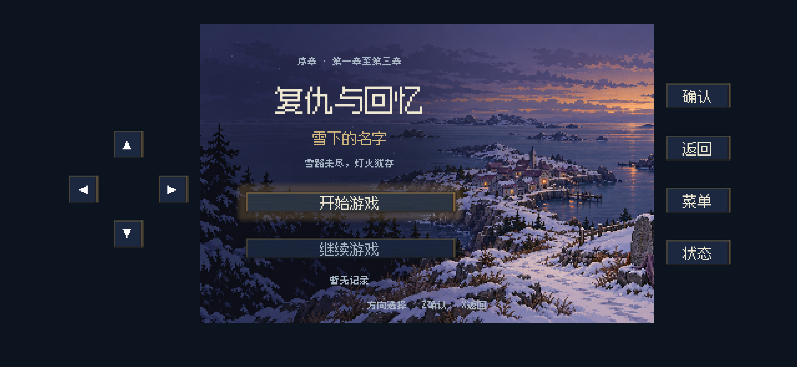
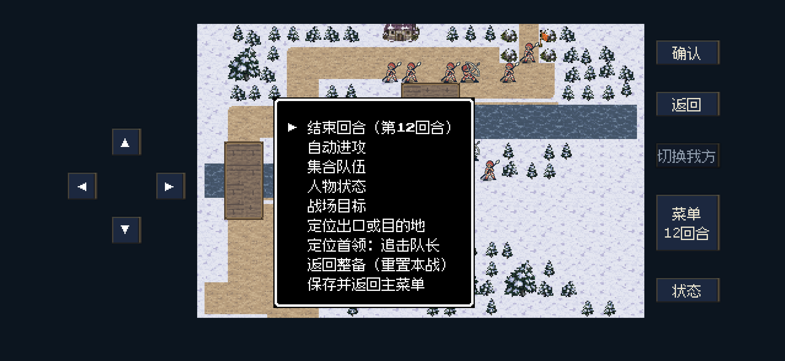
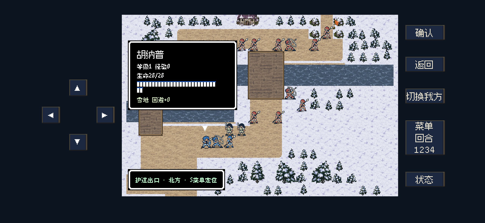
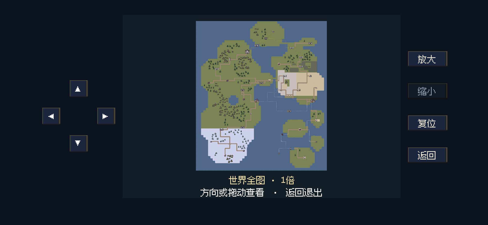
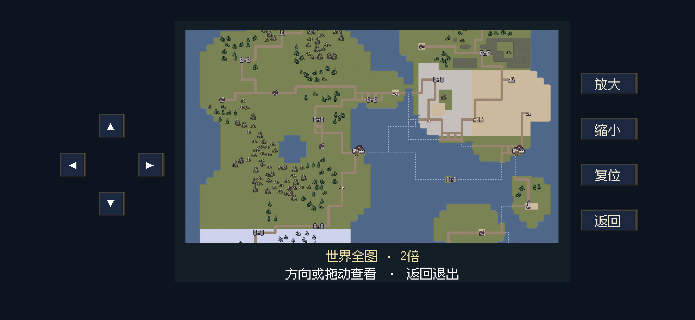
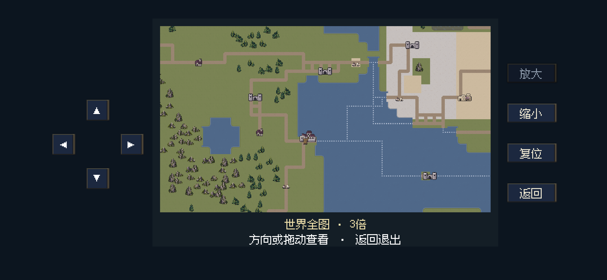
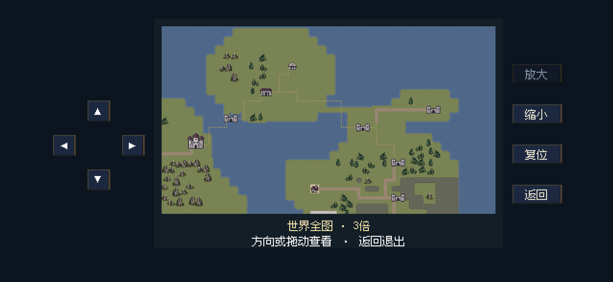
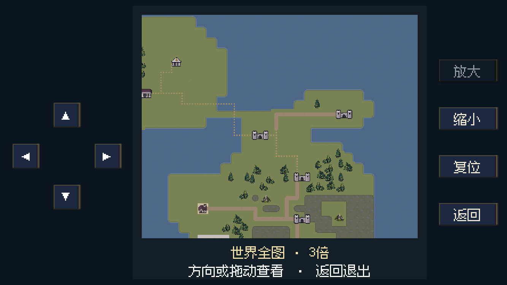
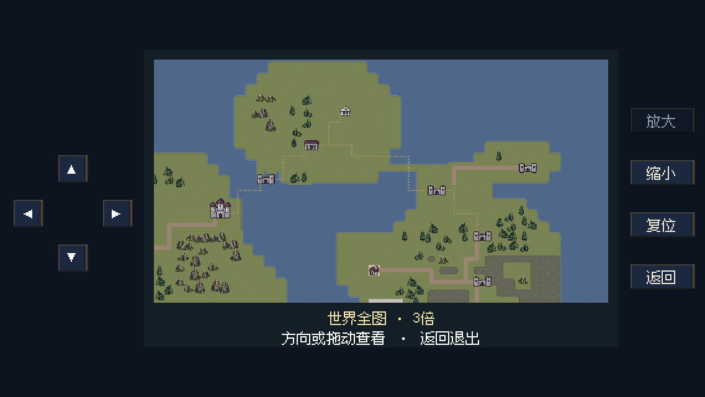

iPhone操作细化 · 0.10.3
2026-10-22 · 放大并拉开方向键，显示当前回合，移除战斗独立保存入口，新增大地图1／2／3倍缩放及平移。
这些是2556×1179及较小横屏的后台引擎截图，不是真机触摸试玩。0.10.3已于2026-10-22 11:06覆盖安装到iPhone 16。安装前已备份当前记录；安装后确认两个存档及两个恢复副本逐字节一致。未进行前台真机试玩。
方向盘外形说明
已按用户确认改成等距十字布局：四个方向均距中心36逻辑像素，外接区域108×108，整体为正方形。沿用游戏现有按钮材质，按键仍分别绘制；中央36×36区域不触发，方向触区不重叠，允许滑动换向。未把用户参考图作为素材接入，也未声称已测得误触率改善。
本次安全区内左侧116、右侧70逻辑像素。为容纳较大的方向键，中间宽度从406调整为364（约减少10.3%），整体右移；右侧安全区外留白不用于放置触控按钮。
验证结果
251项触控与安全区检查通过；97项行为、后台画面、实际方向箭头像素可见性检查通过；导出PCK中的44项行为检查通过。覆盖缩放上下限、拖动／长按平移、松手停止、四角限制、复位、退出返回原地点和浏览地图不改写存档。保存并返回后，回合、生命和已行动状态可读取恢复。
IPA完整性、开发签名和导出PCK哈希一致性检查通过。未执行全战役回归或真机误触率比较。
方向键与画面比例
按键36×36，左右间隔36；四向中心距离一致，中间画面右移176物理像素，保留4倍整数显示。

菜单与当前回合
移除单独保存，保留保存并返回主菜单；按钮动态显示当前回合。


全图1倍、2倍、3倍
按放大／缩小切换倍率；方向键、长按和拖动均可移动范围。最高3倍，复位回到完整地图。



移动边界与较小横屏
到达地图边缘停止，不覆盖底部说明。另检查1334×750和1136×640横屏。


